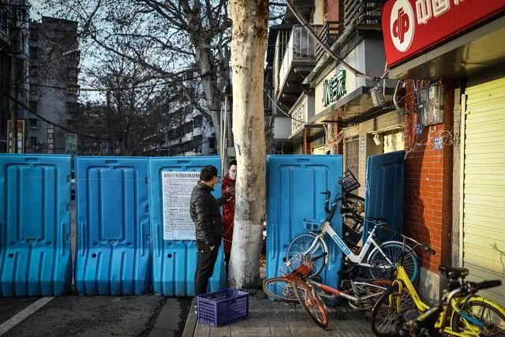
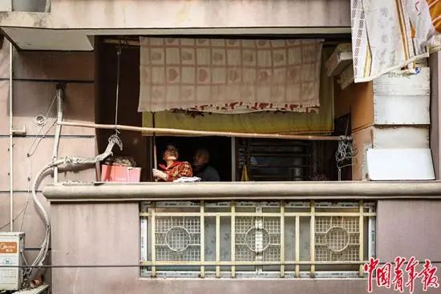
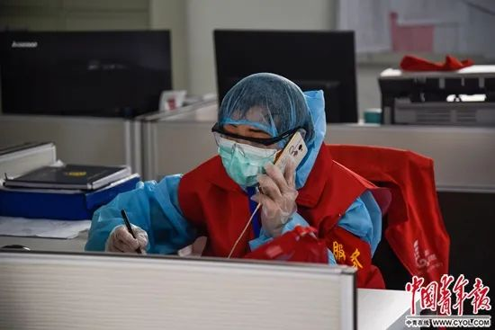

大年初一，我接到救援武汉的通知 | 医生抗疫手记
原文链接 备份链接 编者按： 本文作者刘韬滔为北京医院外科ICU主治医师，进入援鄂国家医疗队名单后，二月七日从北京去往武汉，进行医疗救助。 二月八日晚上九点坐大巴车从汉口驻地出发。半小时后进入蔡甸区，车在一路口红灯前停下。我转头望向窗外， …

2月29日，武汉，一名居民扫码付款给送货人员。中青报·中青网记者 赵迪/摄
本文约4533字
预计阅读时间13分钟
作者 | 中青报·中青网记者 张均斌
编辑 | 张国
武汉在新冠肺炎疫情最紧张的时候，这座城市每天需要增加3000张病床，相当于每天要建成3家三级医院。有十几天时间，洪山区梨园街道新世纪社区党委书记刘婷都要面对床位的供需矛盾：辖区3104户居民把她当成了“救命稻草”，她的电话从早接到晚，求助的、批评的、感谢的，基本都是为了那一张病床。
突如其来的疫情里，社区成了居民外出就医的必经环节，也成了人们情绪直接的宣泄口。这些工作人员，见到城市由最初的慌乱到恢复秩序，也见到了人类在紧急状态下的种种应激反应。
恐 慌
江汉区民族街龙王庙社区党委书记杨茜记得，1月23日武汉“封城”消息传来后，她所在的工作微信群里立即“炸了”，有的同事因为自己咳嗽，非常害怕，还有人担心万一自己跟居民接触得了病，再传染给一家老小。
跟普通居民一样，他们也是从新闻报道里，才知道病毒“肯定有人传人”；他们也四处寻找口罩，并为总要与人密切接触而忐忑不安。
刘婷说，当时社区工作人员一上班就要接电话，手机、座机不间断地响，有向他们要口罩、温度计的，有让他们帮忙买药的，也有发热后要求送医的。打不通电话的人直接涌向社区，上来就痛斥的也有，急眼了还拍桌子。
新世纪社区统计居民发热情况的表格上，数字直线上升，“每天至少二三十例”，刘婷说，居民只要觉得身体不舒服就会马上找社区，虽然事后发现大部分人没有感染，但当时，大家都紧张得不得了。
社区每天将表格上报给政府的最低一级机构——街道办事处，除此之外，他们只能等待通知，安抚居民。

2月17日，湖北省孝感市三里棚社区第六网格，社区工作人员在询问一名打算出社区的居民。中青报·中青网记者 李隽辉/摄
1月24日，社区的压力进一步升级了，武汉市决定全面实行发热市民分级分类就医服务。社区负责全面排查发热病人，并将病人送至社区医院对病情进行筛查、分类。对于需要到定点医院发热门诊救治的病人，由社区安排车辆送去就诊。
武昌区中南路街道百瑞景社区党委副书记李霞记得，有一天，一位70多岁的老太太跪在了社区门口，哭着说儿子发烧“快不行了”，马上要去住院。工作人员赶紧上报了情况。
两天后，街道办事处回复，可以先将病人送到酒店隔离。再联系时，那位病人却拒绝了，说当时只是有些不舒服，微微发热，已经好了。社区医院给他做了各种检测，发现确实没有问题。
但李霞说，为这一位病人，他们前前后后沟通了20多次，上报催促过好几次。类似的情况刚开始很多，“真的能感觉到当时大家恐慌到了极致”。
百瑞景社区党委书记王涯玲注意到疫情的严重性是在1月初。武汉市早期通报的41个确诊病例中，有一例就出现在百瑞景社区。她记得，那位患者1月初就从金银潭医院康复出院了。随后，区卫健局工作人员来到社区，让社区对患者一家进行“包保”，要求患者家属居家隔离14天，医生要每天上门量体温。
这件事让她对疫情提高了警惕。为此，他们取消了原本要举办的社区“百家宴”活动，也取消了面向社区孩子的寒假托管班，建议居民尽量不要出门。他们甚至1月28日就关闭了小区的多数出入口。
但是，更多社区当时缺乏准备，只能在后来的工作中打“补丁”，又苦于人手不足。等到2月11日武汉市对所有小区实施封闭管理时，有的小区一时做不到封锁所有出口，居民出入如常。一位社区党委书记对记者说，在武汉市截至2月9日的“大排查”中，他们用尽全力也只排查了8000多户居民中的2000多户。

2月19日，武汉百步亭社区，两位老人在晾晒被单。中青报·中青网记者 赵迪/摄
等 待
外面交通管制，医院拥挤不堪，为了能从社区“排”到一张床位，不少人跑去哭诉求助。
“如果我家×××出了什么事，你要负责”类似的话，刘婷不知听了多少，早已经“免疫”了。她理解，大家都很着急。
让她格外难过的是那种“无力感”。她接到过一位女儿的求助电话：母亲属于疑似病例，2月1日去世，还没等到确诊，第二天父亲和哥哥又发烧了。
刘婷立即把这户居民的情况上报。等待的过程中，患者情况越来越糟，那位女儿几次在电话里哭到失声，刘婷觉得自己也要“崩溃”了。
为此，刘婷与街道办事处领导打电话时也嚎啕大哭。她觉得自己这么卖力地在为社区做事，但是缺少有效的解决方案，“我坚持不住了”。
那几天，刘婷因扁桃体发炎也在发烧，但她不敢对任何人说。“我必须要撑住”，她说，自己一遍遍打电话询问居民的身体情况，一次次做表上报，就是希望表格上的数字每天减少一些，可是得到的回复往往是“没有床位，真的没有床位”。
那位打电话求助的女儿，是一位在外地工作的教师，原计划回武汉探亲一周，没想到最后送走了双亲。她后来在隔离点第一次见到了刘婷——刘婷当时因为与感染者接触而被隔离。她手写了一封感谢信，感谢帮助过自己的社区工作人员。
在这封整整齐齐的信里，她感谢了曾陪她痛哭、为她家人跑前跑后、自费帮她购药的人。其中一位社区“网格员”，得知她未感染时发出的“爽朗笑声”，让她觉得“仿佛一束阳光照入我黑暗的心中”。
“好久没听到笑声了！这笑声给予了多大的温暖是无法言明的。”她说。
她还说，这些天，自己流的泪是最多的，说的“谢谢”也是最多的。“父母离世，家就没了！心中痛楚万分，但我仍强迫自己提起笔，写下这封感谢信，因为我要记住在这艰难时期，你们给予我的温暖和支持！这将是我余生走下去的一个动力……”
“等疫情危险解除，我一定要抱抱你们。”这是她表达的愿望。
求 生
为了“抢”一张病床，百瑞景社区党委书记王涯玲每天零点左右都会守着工作群，街道工作人员这时候会告诉大家今天有几张病床，早早准备好患者资料的社区书记们会马上“抢”这几个名额。
“病床只有这么多，那肯定是先到先得了。”王涯玲说，当时床位紧张，分配下来，一个街道少的时候每天只能分到3张病床，多的时候也只有10张左右，远远不够。
一个家庭三口人全都感染，两位老人都70多岁，向社区上报时，父母将儿子的病情描述得更为严重，等了5天，儿子有了床位。
没想到儿子刚住下，第二天，父亲自己就呼吸困难接受抢救了，最后没抢救过来。社区工作人员提起这件事就感到后悔。“老人一开始可能是撑着，看到儿子住进去了，心情一松懈就垮了。当时让老人先住进去可能就好了。”
据多位社区工作人员反映，当时拍肺部CT、做核酸检测、住院等都要等待，六七天能等来一张病床是幸运的。
为了一张病床，武汉人想尽了各种办法，市长热线、举报电话、微博求助……李霞也建议居民通过各个渠道求助，“我们最后真的没办法了，说不定你反映了以后，事情能够解决得快一点。”
有居民投诉后，上级派人到社区了解情况，李霞说，只要你们能够尽快把病人安排好，我认罚。

2月18日，湖北省武汉市青扬十街社区工作人员曾女士正在统计居民反馈需求。中青报·中青网见习记者 鲁冲/摄
江汉区民族街和平社区副书记汪沛记得，1月26日，两位70多岁的老人被儿子送回这里的一处旧宅隔离。他们CT显示双肺感染，当时算疑似病例，排队等待核酸检测。两位老人看上去精神状态就不太好，生活勉强能够自理，还通过社区联系购买过食物。当时社区人手不足，14个工作人员面对着900多户居民，忙得不可开交，只能早晚给老人打电话，询问一下情况。
据汪沛回忆，2月1日早上，他们拨通了男主人的电话，老人答了几句就挂了，下午再拨过去，无人接听。工作人员上门一看，那位老人已经去世了。
转 机
曾有一个居民拿着一份文件来找杨茜，上面写着防疫期间龙王庙社区所配备的公车数量，4辆，用于病人转运、购买物资等，每辆都有车牌号。
杨茜愣住了，“我们一共就收到两辆车，一辆还是和隔壁社区共用的。”她询问街道领导，对方也答不出个所以然来。在她印象中，那段时间，大家都在“打乱仗”。各种文件出了一个又一个，做了很多承诺，但基层落实起来困难重重。
最突出的问题是“人床矛盾”。据湖北省卫生健康委员会的通报，武汉从1月23日封城开始到2月9日提出“应收尽收”（对确诊患者集中收治，疑似患者、发热患者、密切接触者集中隔离观察），共有确诊患者16478人。而中国疾控中心后来的回溯性研究发现，仅1月21日-31日10天内，武汉就有26468人发病。
那段时间，杨茜只有一个念头：要把病人送出去。她恨不得随时做好准备，把病人往医院送，即使一时不能住院，“医院门口出了事也能马上得到抢救”。社区书记之间也不断交流打听着医院的消息。
她所在的社区，有个80多岁的患者一直没有排到床位，她安排人陪着老人在医院门口守着，等了近8个小时，才有了留院观察的机会。在医院“留观”，只能坐在小板凳上输液，但她认为，“留观总比在家里等强，总有一线生机。”
杨茜遇到最棘手的一位患者是位50多岁的男性，本身就患有红斑狼疮，再加上新冠肺炎。“治红斑狼疮的医院不治新冠肺炎，治新冠肺炎的医院又不治红斑狼疮。”
那位患者肺炎属于轻症，红斑狼疮更严重些，当时想找医院先治疗红斑狼疮，可是非新冠肺炎定点医院知道他发热，就拒绝了，而由于是轻症患者，他又在定点医院排不上号，来来回回折腾了好几次。
后来，方舱医院建起来了，大量轻症患者从定点医院转入方舱医院，这位患者才住进了医院。
在这些社区工作人员看来，转机出现在建立方舱医院之后。在中央赴湖北指导组推动下，武汉将会展中心、体育场馆等改造为方舱医院，集中收治新冠肺炎轻症患者。2月5日，第一家方舱医院启用。
刘婷说，此后，社区的患者要么进了医院，要么进了方舱，要么去了隔离点，她工作中一个最明显的变化是，求助的电话少了。从人们的语气里，她能明显感到情绪的变化。
“一开始每天都有居民打电话来问，哪栋哪楼是不是消毒了呀，怎么没有闻到消毒水的味道？看到隔壁家贴了封条，又会打电话来问各种情况，他怎么还在家，我连窗户都不敢开怎么办呀……”李霞每天都会把最新的疫情通告发到社区居民群，群里就会“炸锅”，人们在猜测最新确诊的病例究竟出自哪户，有没有出过门，有没有和自己接触过……
现在，微信群里这样的讨论少了。对社区工作人员来说，最大的难题变成了“保供”——保障社区居民的基本生活所需。
刘婷说，封城时，他们就针对社区里的独居老人和困难人群提供特殊照顾。等到2月11日，武汉小区全面封闭，团购的巨大需求涌到了社区。
政府安排了超市与周边社区结对。每天统计、采购、分发是巨大的工作量，社区前一天统计好居民的需求，第二天一早就去超市打包，然后再一户一户分发。

2月18日，湖北省武汉市青扬十街社区，工作人员分拣好的粮食蔬菜“整装待发”，即将送往各居民家中。中青报·中青网见习记者 鲁冲/摄
一些居民会主动帮忙做事。李霞说，大部分居民都很好相处，有的会在居民微信群里帮忙张罗，知道是特殊时期，谁家若是需要点什么，大家都会相互匀点。
在几乎每一个小区，封闭之后，一种消费需求尤其迫切——买药。为了给一些病人买药，社区工作人员凌晨4点就去定点零售药店排队取号。
“像我们这药最全的汉口大药房，有几天只放30个号，我们凌晨4点去的时候，就只能排到15号。”杨茜说，大家都知道药的重要性，不敢耽搁，有的工作人员为了买药甚至在药店门口过夜，买到一批就送回去一批。
龙王庙社区负责帮居民买药的是社区副主任白玉姣，时间长了被大家称为“白医生”。“白医生”原来也不懂药，买多了就成了半个行家。杨茜说：“什么病需要什么药，需要多少剂量，哪种牌子的药更好，白医生都一清二楚，大家经常打趣：白医生，今天问诊了吗？”
随着疫情形势的转好，居民的需求也在不断多样化、个性化，团购的菜要更便宜、更新鲜、更多品种……社区书记们知道，这些多元需求的增加，表明武汉正在从“非常”走向“正常”。
中国青年报·中国青年网出品
微信编辑 | 陈轶男

觉得好看请点这里
原文链接 备份链接 编者按： 本文作者刘韬滔为北京医院外科ICU主治医师，进入援鄂国家医疗队名单后，二月七日从北京去往武汉，进行医疗救助。 二月八日晚上九点坐大巴车从汉口驻地出发。半小时后进入蔡甸区，车在一路口红灯前停下。我转头望向窗外， …
原文链接 备份链接 她会因为想家哭鼻子，也会因为喝到可乐而幸福感爆棚。她自愿报名到武汉一线为患者服务，我又钦佩她的坚强和勇敢。 文 | 吴美芬 小葵是从北京到武汉支援的一名护士，今年24岁。2月7日她到达武汉，至今已经有20天。2月19 …
原文链接 备份链接 “很多人去世。”袁鸣说，“但他们和我们都尽了最大的努力。” 2月15日上午，刚刚经历了一夜冬日雷雨和大风的武汉大雪纷飞，袁鸣早早进入病房查房。依次穿上蓝色隔离服、白色防护服，戴上手术帽、面屏和护目镜，套上手套和脚 …
原文链接 备份链接 *************▲*************2月19日，武昌医院的发热门诊就诊的人数明显减少。（南方周末记者 王伟凯/图） 全文共5257字，阅读大约需要10分钟。 因为诊断门槛过高，过去二十多天里，武汉 …
原文链接 备份链接 “医院外面，一位女士咳嗽到不行，又住不进病房。我看到两个人的绝望，想要拍出来，却不知道怎么去表达，只拍到了两个人的沉默。” “我进去之前，就看到医院门口各个显著位置都贴着‘床位已满’的公告。走进门去，右手边是一个输液房 …